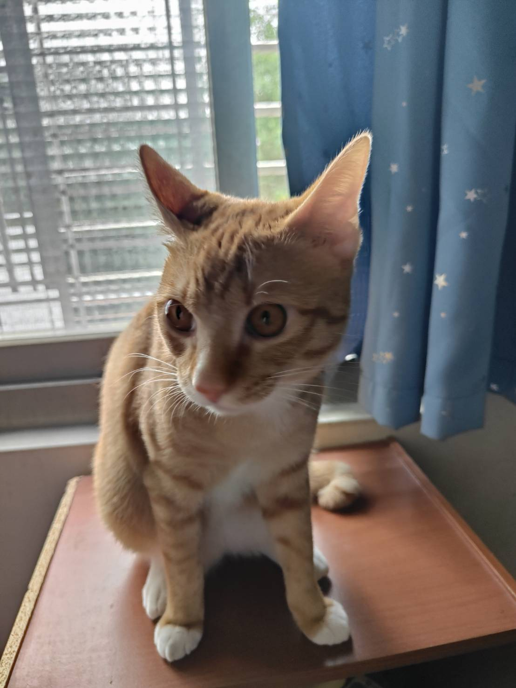

🎮 多人搶答
MULTIPLAYER QUIZ
📚 目前題庫：
玩家頭像（選填）

📷 選擇圖片
我的 Live2D 角色（選填）
🔥 想換手機？先選多一點！
選擇後需要重新整理頁面才會套用
加入遊戲
連接 MQTT 中...
題目
1
/
10
—
—
0
15
等待主持人開始遊戲...
A
B
C
D
準備搶答
搶答！
正確答案
繼續下一題...
🏆
遊戲結束！
↩ 回到加入畫面
📊 玩家歷史成績
暫無紀錄
MQTT